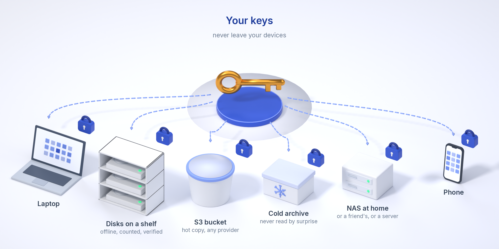

Dina filer. Din lagring.
Varsto är en end-to-end-krypterad app för synkronisering och säkerhetskopiering som använder dina egna enheter och de lagringstjänster du själv väljer. En disk, en NAS-utdelning, en S3-bucket eller valfri rclone-remote: appen krypterar allt på dina enheter, för en signerad förteckning över var varje block finns och låter enheter som aldrig är online samtidigt hålla sig synkroniserade via den lagringen.
Ladda ner alfaversionen Snabbstart Källkoden på GitHub

Det här fungerar i dag (alfa, 0.0.1-alpha.11)
Krypterat innan det lämnar din enhet
Filerna delas upp i innehållsdefinierade bitar som var och en krypteras med XChaCha20-Poly1305 under nycklar härledda ur ditt valv. Lagringen ser bara ogenomskinliga objekt och storlekar, aldrig namn, hashvärden eller innehåll. Så fungerar det.
Använd din egen lagring
Vilken katalog som helst som enheten når, vilken S3-kompatibel bucket som helst (AWS, Scaleway, Hetzner, B2, R2, MinIO) med dina egna nycklar, eller valfri rclone-remote. Kall lagring och arkivklasser skrivs till men läses aldrig utan att du bekräftar.
Enheter som aldrig möts blir ändå samstämmiga
Varje enhet för en signerad, krypterad liggare och publicerar den via lagringen. Ändringar, raderingar och konflikter avgörs deterministiskt; samtidiga ändringar behåller båda versionerna, raderade filer hamnar i en papperskorg.
Bakgrundsapp på varje dator
Bakgrundstjänsten startar vid inloggning, bevakar mappar och synkroniserar inom några sekunder, utan knappar att trycka på; gränssnittet öppnas i din webbläsare (i ett eget fönster på macOS) och visas bara för den här datorn. Uppdateringar söks automatiskt och erbjuds när en nyare version finns.
Selektiv synkronisering, överföringsdiskar, opålitliga repliker, delning
Platshållare tills du hämtar filen; ett USB-minne som bara bär det den andra enheten saknar; en väns NAS som lagrar dina kopior utan att kunna öppna dem; en mapp som delas med en annan användare genom sin nyckel. Se Funktioner, Användningsfall och Skärmbilder.
Postkvantsäker hybridkryptografi
Varje liggarbatch signeras med Ed25519 och ML-DSA-65, och båda måste verifieras. En delningstoken förseglas till mottagarens X25519 + ML-KEM-768-nyckel, så den kan skickas via vilken kanal som helst. Äldre batcher med enbart Ed25519 förblir giltiga tack vare den algoritmidentifierare de bär.
En assistent med begränsad åtkomst
En MCP-server låter den AI-assistent du väljer läsa, analysera och omorganisera filer i exakt de mappar du ger åtkomst till, med enbart läsrätt om du inte säger annat. Varsto håller själv reda på när filer senast användes och föreslår var oanvänd data är billigast att förvara.
Regler som varnar i tid
”Två kopior i molnet och en hemma, verifierade inom 30 dagar.” Varje enhet kontrollerar regeln mot liggaren och varnar, i appen och med en avisering, innan den slutar gälla.
Peer-to-peer, komprimerat
Dina enheter utbyter krypterade block direkt, som med torrent: automatiskt i det lokala nätverket, över internet genom NAT med hole punching, och via en av dina egna nåbara enheter när det misslyckas. Inga trackers, inget leverantörsrelä. Blocken komprimeras före krypteringen, så varje kopia och överföring blir liten. I ett hem bakom NAT kom stora filer från peers med 8 till 9 MB/s på en 100 Mbit/s-linje, upp till 1,8 gånger så snabbt som från bucketen: Prestandatester.
Strongroom-mappar
En mapp vars nyckel bara finns medan du rör vid din FIDO2-säkerhetsnyckel. Kryptografiskt, inte en dialogruta: ingen lösenfras, valvnyckel eller stulen bärbar dator öppnar den.
Gamla diskar som en pool
Anslut en disk till dockan, lägg till den i poolen, så fylls den med det poolen saknar upp till sin reserv. Mata ut den när du blir ombedd och förvara den var som helst; när den kommer tillbaka känns den igen på sin markör, kontrolleras och fylls på. En fil vars enda kopia finns på en disk som inte är ansluten säger det: ”anslut disken data-01 (hyllan)”.
Organisationer för företag
Administratörer godkänner enheter för namngivna personer, tar bort en person med alla personens enheter i ett steg, bestämmer vad medlemmarna får göra och för en signerad, kedjad logg över allt detta. En rotnyckel på papper utser administratörerna. Ett valv utan organisation påverkas inte av något av detta. Mer.
Bokföring du kan kontrollera
varsto fsck --verify jämför liggaren med vad lagringen faktiskt innehåller och hashar om varje objekt. En enhet som återställts från en gammal säkerhetskopia upptäcks och spärras.
Det här är utformat men inte byggt än
iOS, bredare NAT-tester
Nästa steg är iOS-versionen på riktiga enheter. NAT-traversering är byggd men bara testad på localhost och i underhållarens egna nätverk; ett valv där alla enheter sitter bakom NAT har fortfarande ingen väg över internet.
Ärlig status
- Alfaversionen är en första vertikal skiva: kärnbibliotek, CLI, bakgrundstjänst, skal för systemfältet och menyraden, Android-skal, ungefär 54 000 rader Rust, över 200 automatiska tester och en labbmiljö med virtuella maskiner bakom hem- och kontors-NAT, bland annat konvergens mellan två enheter offline, konflikter, spärr av återställd enhet, repliker, delning, regler, peers, Strongrooms och diskpooler. Använd den bara med testdata.
- Den kryptografiska designen har inte granskats eller reviderats. Hotmodellen och felmodellen beskriver vad designen är avsedd att göra och var den tar slut.
- Källkoden är offentlig på github.com/janttsu/varsto under PolyForm Shield License 1.0.0 (källkoden tillgänglig, inte öppen källkod); buggar och frågor tas emot i ärendehanteringen där. Lagringsformatet är dokumenterat så att dina data förblir återställningsbara.
- Namnet är preliminärt och webbplatsen hålls borta från sökmotorerna tills det är bestämt.
Nedladdningar
No binaries are published yet. Build from source with cargo build --release.
Verifiera en nedladdning: listan med kontrollsummor är signerad med Varstos releasenyckel (se ”Verify your download” ovan): varsto verify-release <file> --github, eller minisign och sha256sum -c SHA256SUMS --ignore-missing. varsto update kontrollerar själv signaturen och GitHub-releasen.
Senaste från bloggen
- Alpha.9: data where you want it, repair by itself, signed updates, and every platform built in the open
Folders can be placed on chosen storages and moved between them, lost copies are repaired automatically, updates are signed with an offline key, peer-to-peer downloads fetch many blocks at once, and every package is now built, tested and photographed on GitHub's runners. - Alpha.8: a ledger that stays small, removable devices, and phones that keep nothing in clear text
The ledger now lists only what is new, keeps a cached view and prunes itself behind signed checkpoints; devices can be removed with new keys for everything written afterwards; phones keep encrypted folders as encrypted blocks; and the interface shows where your data is and how peer-to-peer traffic flows. - Alpha.7: pair devices with a code, Finder actions, and a real NAT path
Devices now pair from the interface with a one-time code, Finder can download a placeholder or free up space with a right-click, the macOS app installs from a disk image, devices reach each other through NAT, and removable disks can form a pool. - Alpha.6: the source is public, and every platform builds in the cloud
The repository is now public on GitHub under the PolyForm Shield licence, the native macOS and iOS apps build on GitHub Actions, Linux, Windows and Android build on short-lived cloud machines, and the interface was redone around a file view. - Alpha-0: the first vertical slice
A command-line tool that encrypts, stores and syncs a folder between two devices through storage you own, with a signed ledger you can check.